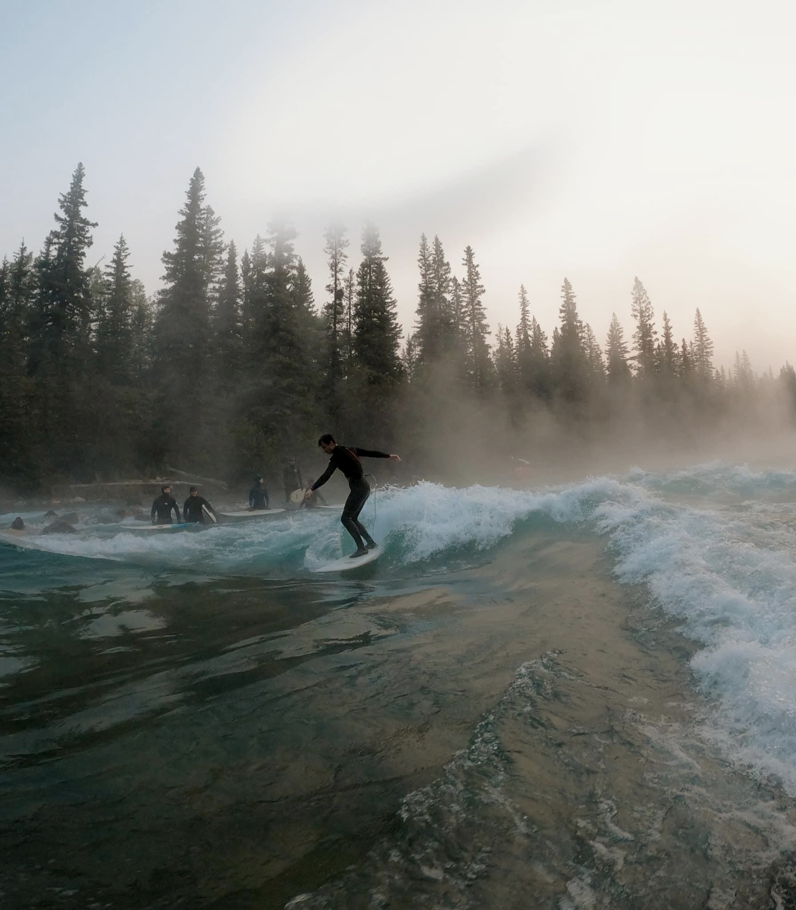

About Me
Solving problems and improving how something works has always been a fixation of mine.
This motivated me to pursue a degree in Computer Science,
with a focus on human-computer interaction.
I'm concentrated on crafting interfaces that are not only functional, but inclusive, visually engaging and user-friendly.
In my spare time, personal projects
are always in the works, to either solve an everyday problem, or to create
fun and engaging interfaces.
Besides software development, my time is spent boldering or surfing in the mountains!
